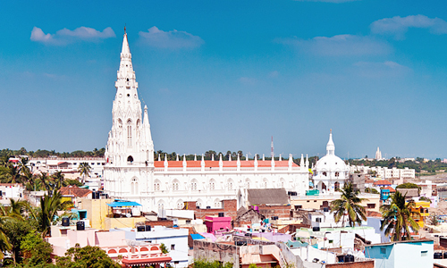
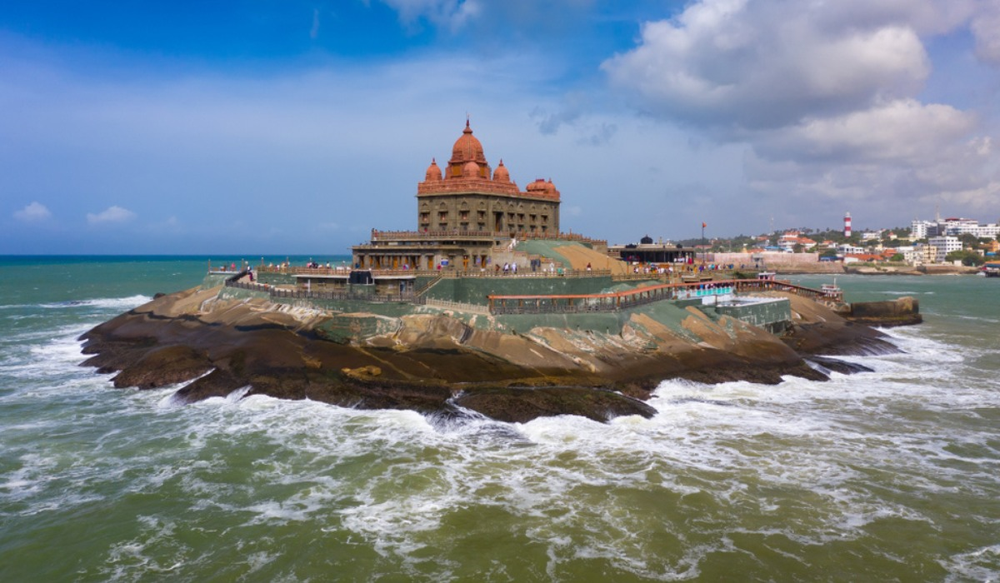
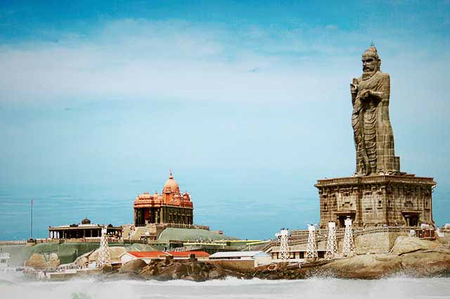

KANIYAKUMARI

ST.XAVIERS CATHEDRAL

SUNRISE

VIVENKANANDAR MAHAL

THIRUVALLUVAR STATUE
About
The Thiruvalluvar Statue, or the Valluvar Statue, is a 41-metre-tall(133 ft) stone sculpture of the Tamil poet and philosopher Valluvar, known as Thiruvalluvar. It is located atop a small island near the town of Kanniyakumari on the southernmost point of the Indian peninsula in the state Tamil Nadu, India, where two seas (the Bay of Bengal and the Arabian Sea) and an ocean (the Indian Ocean) meet. The statue was sculpted by the Indian sculptor V. Ganapati Sthapati, It is currently the 25th tallest statue in India.